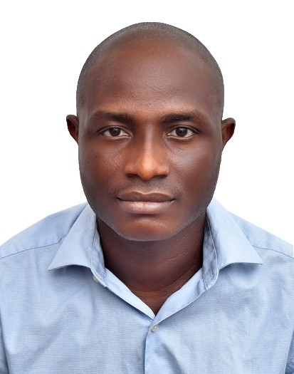

Abiodun Temitope Babayode | WDD 130
My name is Abiodun Temitope Babayode. I'm a Nigerian software engineer with a passion for building digital solutions that make life easier and more secure. Over the years, I've worked in various roles across the tech industry. I've developed secure systems, built backend services, and contributed to platforms both locally and internationally. My experience spans across organizations like ITSkills Center, Techconnfer Technology in India, Eagle3D Streaming, Norlics Technology, and currently Enexgi Technology where I work as a security software developer. At Norlics, I help build and maintain a platform that manages revenue and tax collection for the Enugu State Government. My core stack includes Node.js, Express, MySQL, MongoDB, and Sequelize, among other tools. Beyond work, I'm a family man—happily married with two children. I'm a member of The Church of Jesus Christ of Latter-day Saints, and my faith plays a big role in my life. I'm also currently furthering my education in software development through BYU–Idaho's Pathway Connect program.